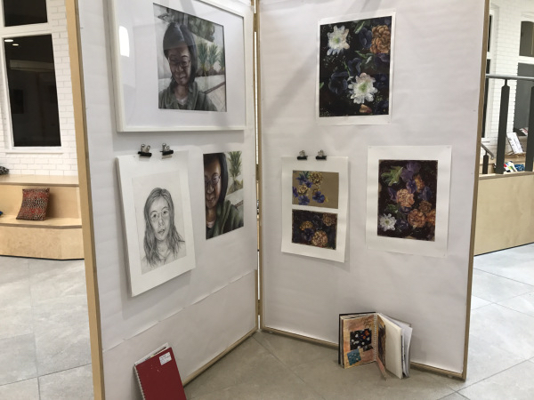
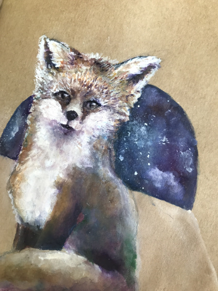
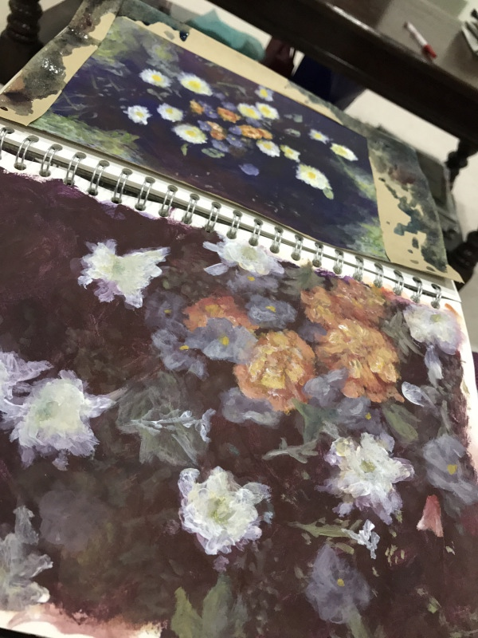
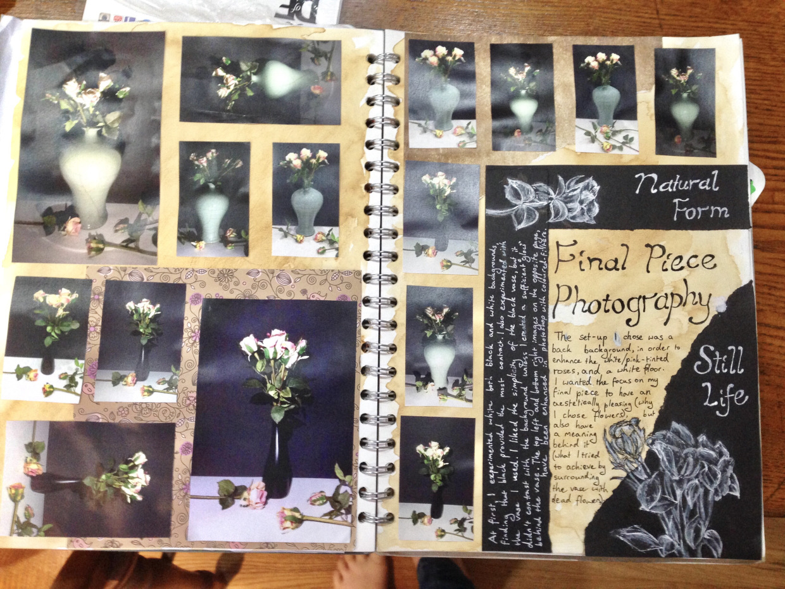

From a GCSE A*/grade 9 student
If you Google “should I do GCSE art”, you’ll probably find a lot of students and mums saying how difficult GCSE Art was, as well as how impossible it is to keep on top on the workload, making it impossible to get a good grade…
Well, guess what–I took GCSE Art&Design from 2015-2017 and I was thrilled to obtain full marks in both my coursework and exam project! It was not an easy GCSE for me, but it was probably my most rewarding.
Note: I did the AQA Art GCSE course in 2016/17. I am basing this article on the AQA art courses (specifically the Art & Design course) but I have also read the specification for the new 9-1 course, so the information given and the skills I have learnt are 100% applicable for the exams taught from September 2016 (with exams starting in June 2018). This advice can also be transferred to other exam boards, although the Assessment Objective marking method that AQA uses (mentioned in my first point) may differ from that of other exam boards.
Every piece of advice (besides the first) can be applied to everyday artwork and any art lessons internationally–you don’t need to be living in England and doing your GCSEs to be able to “work homework around your schedule” or “cut some corners”; this goes for anyone struggling with art loads! In fact, it could even work for artists on social media who are trying to gain followers with frequent posting, but are stuggling to keep up with demand (we’ve all been there!).
It is a truth universally acknowledged that GCSE Art is a difficult GCSE. You have probably heard it a thousand times that the GCSE work load for all art courses is pretty huge. This is most definitely true; my art class was full of extremely talented artists who all were capable of getting that prestigious A* grade. However, talent is not everything and with so much to do in the course, it is very, very easy to fall behind.
Despite this warning, it would be a lie to say I did not love GCSE Art & Design and that the art lessons were not the highlight of my Year 10/11 timetable. These tips are all to make the GCSE Art courses (whether photography, art & design, fine art or something else) more manageable in workload, which I have learnt over the two-year period. I believe some of these tips (particularly the last one) significantly reduced my stress levels in art lessons
For the AQA specification, there are four elements that are each marked out of 24 (old qualification: 20), leading to 96 marks (80): for each of your coursework projects and your final exam project (the final grade is 60% coursework and 40% exam). I will give a quick summary of each of the Assessment Objectives (AO) below (not in chronological order, but by what my teacher taught me as the most sensible order):
This may seem off topic to the question of “less is more”, but when it comes to GCSE Art, as long as you have covered all four of these aspects in good enough quality, then you will not lose marks. Sometimes, teachers even discard some of your worse pieces for the marking process, so it doesn’t lower your grade. Of course, that isn’t a reason for slacking as your teacher will know how much you need to do at what standard for that A* (or whatever grade you are aiming for!).
This tip is more for reassurance than advice for something you should put into practice: just focus with the task at hand, and if there is one terrible Year 10 piece that you and your teacher both know did not show off the best of your ability, it will probably be removed with little fuss.
Similarly to the last tip, this is important considering just how much work you may have to do for your GCSE Art course. You may want to try and get every part of an artwork to the same degree of “finished-ness” and detail, but bare in mind that examiners just want to see you are capable of getting to that standard at all!
If you are running short on time for any art piece, just make sure one area of it is finished, to show you are capable of reaching that A*-standard! You will not be marked down on that, although, again, that is not an excuse for slacking- your teacher is unlikely to appreciate every painting or sketchbook page being half finished (note that this does not apply for artist research pages or any other collage-type work you might do for AO3; those are meant to look full and busy, however you may be able to cut some shortcuts: see below).
This was not a piece for my GCSE coursework, but I decided to include it all the same (it is called “Moonlight”; if you’re interested in finding out my process in creating this little fox, check out my article here, where I also discuss my advice for overcoming a “slump”, also known as “I-don’t-know-how-to-fix-this syndrome”) as it demonstrates my point pretty well!
This piece was taking forever to paint and add the detail I wanted, so I ended up focusing completely on the face and head area. As you can see, this did not really affect how “finished” the artwork looked; in fact, the eye focuses on areas of more detail, making it so much more effective. You can see, if you take a second look at this painting, that everything from the neck downwards is actually little past the “base-layer” stage. Obviously, if I had longer (as in, about five more hours!), I could have added all the white highlights to the whole piece but, had this been a piece of GCSE coursework, it would have shown the examiner that I am capable getting a great amount of detail, as I got with the face, had I had enough time.
Now by shortcuts, I don’t mean getting someone to do your work for you, or printing out a sheet of photos just to stick it straight into your sketchbook! No, I mean using different media to add details quicker to get that grade A piece to an A* in 20 minutes, or to save those photos slightly bigger just to fill out more space, more quickly. This is similar to the point above in that you may not finish you artwork how you wanted to, if only to save time, yet this is really not he end of the world, especially if it is only an AO2 piece.
Here are some tips for quickly finishing art pieces, and also finishing research pages:
This one is also very important; the number of people whom I’ve heard leave their homework for the lunchtime before the lesson is huge! I have sometimes been known to do this myself, I grant you, but I do find it brings me unnecessary stress (plus, I very rarely can manage to finish my art homework in 30 minutes!). A very easy way to fall behind on art homework can be simply to procrastinate, putting it off to the last minute and then forgetting about it. It is notoriously common!
So an easy way to prevent procrastinating with your art homework is to multi-task when you do it. I personally find that the best time for me to do my homework is when I would usually watch television in the evenings; a Saturday night 'Strictly Come Dancing' session is the perfect excuse to spend two and a half hours doing a collage or working on a study of an apple! Other times you could do your art homework could be during the school journey from home or on the way back home, during lunchtimes (though best not to do it the lunchtime before the lesson- try to spread it out throughout two or three as you’ll probably need the extra time!) or whenever you have a break in the day.
I don’t believe art homework shouldn’t be enjoyable; it should be fun, like a hobby. What is great about art is also that you can be social while you do it; I used to go to the art room every luinchtimes before a lesson so that I could chat with my artsy classmates while we all did some homework- it was a really nice way to spend my breaks in the school day!
This is the most valuable piece of advice I could possibly give. I can not express how important time management is in art; if you can’t get your work done in the allocated amount of time, the unfinished work quickly builds up. This tip is what gave me five hours-worth of free periods at the end of Year 11, after I had finished my exam, while my classmates were finishing off coursework pieces. These free periods were very valuable for revision purposes so that I could now focus on subjects I stuggled with, putting Art behind me.
Put in the time. Work hard to make A* pieces at the weekends, in the evenings while watching television, because they will be valuable at the end of the two years. My favourite sketchbook page to this day is a photo collage I made which took me 10 hours to complete while watching TV one evening; you definitely can’t tell it took 10 hours when you look at it, but every photo, every stroke, was considering and placed carefully until I could declare it perfect. It is those sort of days that differentiated the A-grade pupils from the A* pupils: that clear passion and determination and pride in your artwork- and you don’t have to spend 10 hours on a piece just to prove that. Working hard at the start of Year 10 helps lower the inevitable stress (and workload) in the Year 11 exam season and that is precious; you really do not want to sacrifice revision and work in other subjects just to finish your art exam coursework.
I really hope these tips have been helpful and wish the best of luck to anyone doing GCSE Art next year, or hoping to in the future. It is possibly the most rewarding GCSE, in my opinion, if you are able to work hard and focus on the task at hand. Swapping my GCSE options to do Art in favour of Latin was quite possibly one of the best decisions I’ve ever made; those two years improved my art more than I could have ever imagined, as well as the experience itself just teaching me so many things!
Those who say art is an easy A* have probably never actually been through it, but it’s a great journey; just try to enjoy it!